全部是草稿，等你看過才全面做。動畫是真的可播放（打包後的 demo.html，跟 App 內載入的是同一份）；點一下畫面播完後重播、長按暫停。繁中、淺色。畫面來源 screens/home.html（新增行程、待辦兩種卡，互動模式）。
home 動畫once · crop safe接在引導頁最前面。封面 zoom（旅程名 → 「第 1 天 · 共 6 天」進度）→ 拉遠露出畫布（即時動態、總覽、QR、匯率）→ 長按封面進編輯 → 拖「匯率換算」到總覽上換位置 → 點「完成」→ zoom 到即時動態卡（倒數每秒走）。約 9 秒。
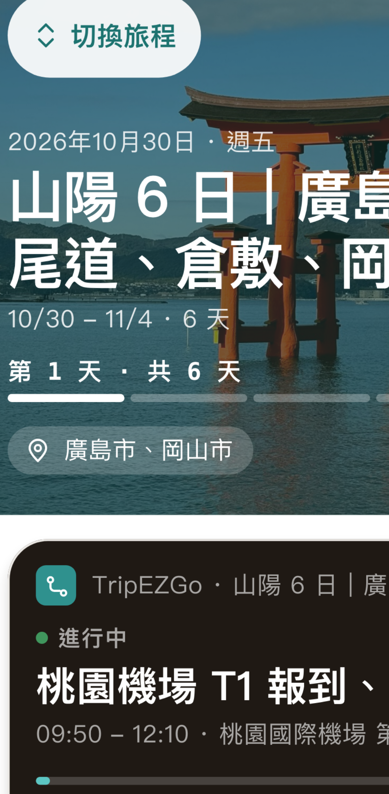
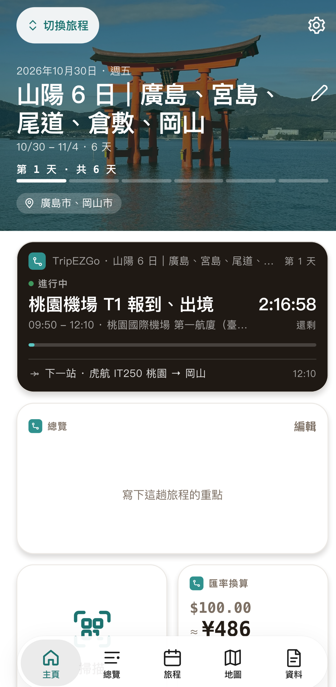
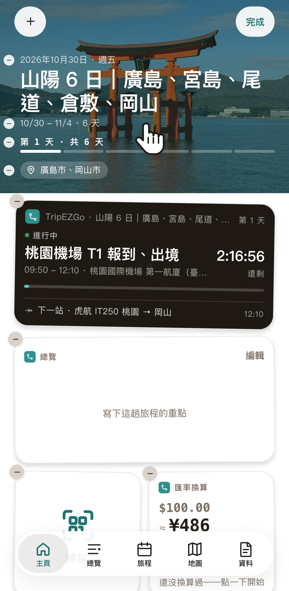
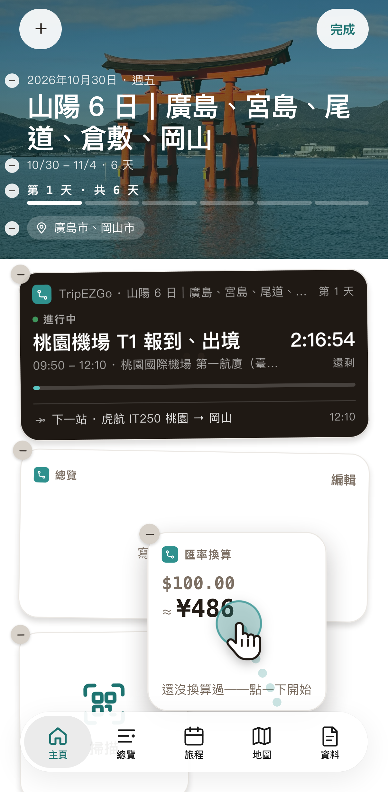
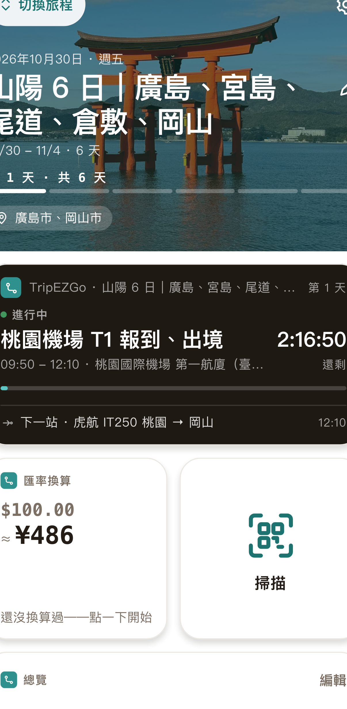
pw-home-pages 動畫loop · crop box 0,272,402,500 · nohand第 1 頁 → 往左滑到第 2 頁（免費帳號蓋毛玻璃：鎖、「升級 Premium 解鎖更多頁」）→ 毛玻璃溶掉、露出第 2 頁 → 滑到第 3 頁 → 回第 1 頁。一輪約 13 秒，循環。
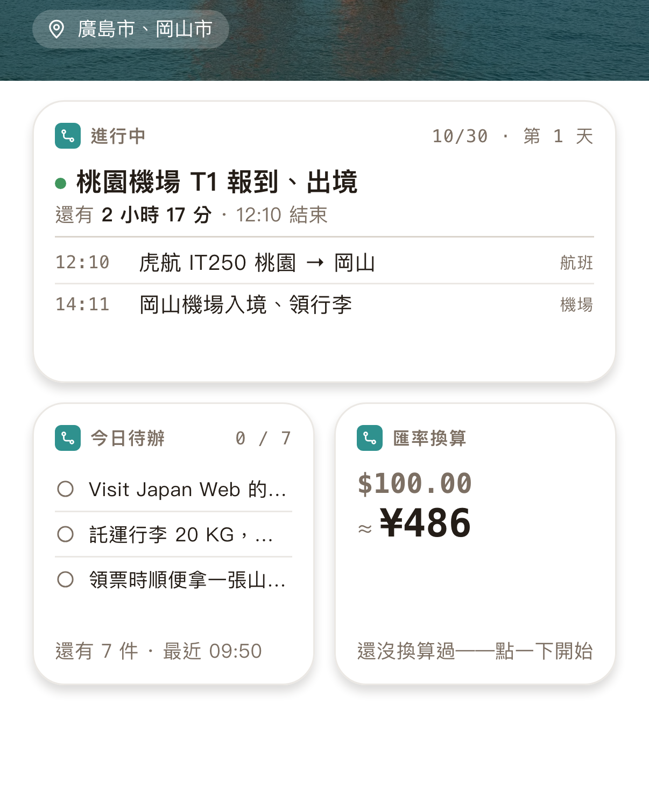
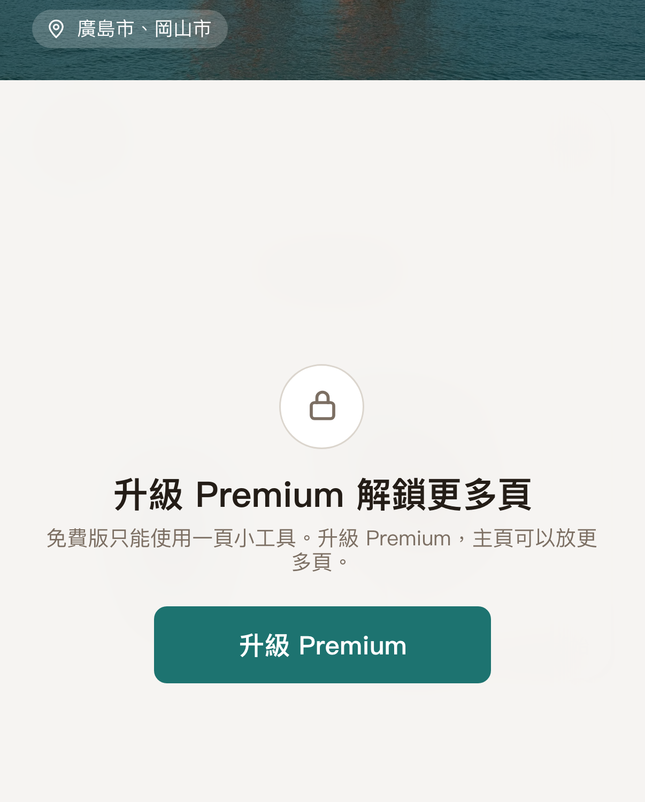
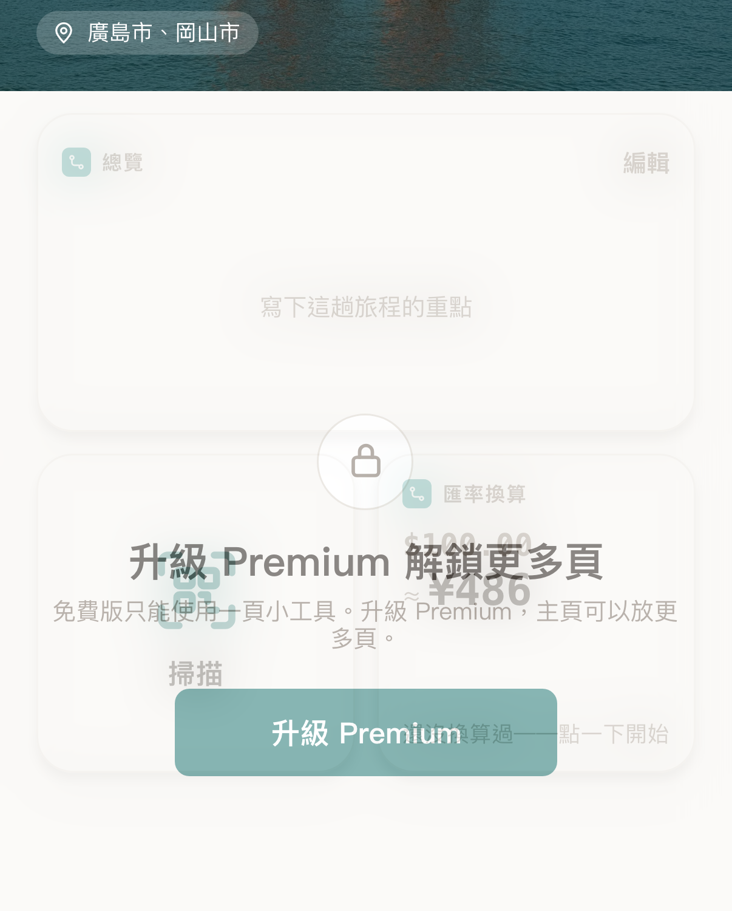
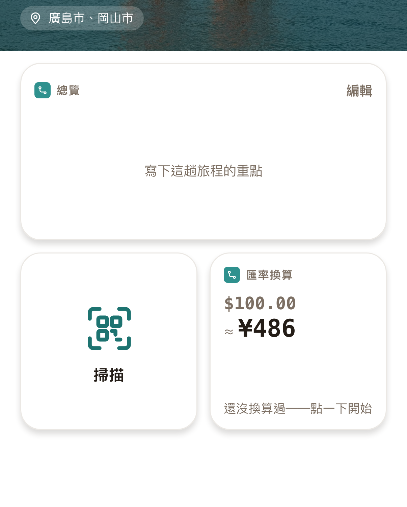
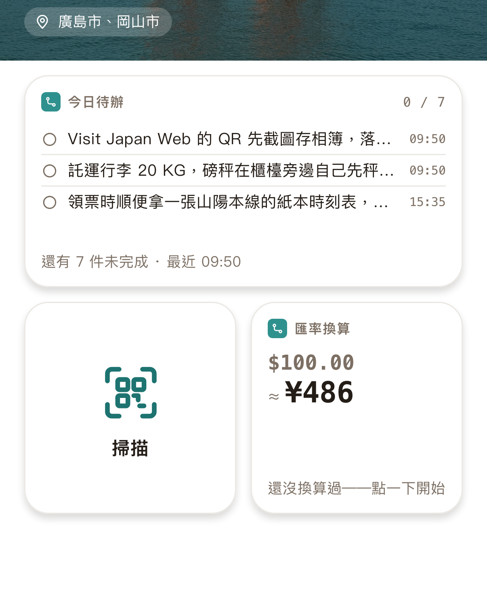
plan（換新分頁列後重出）左舊（1.5.x 分頁列）、右新（主頁／總覽／旅程／地圖／資料；標題改縮字不再截斷）。動畫流程、資料（山陽 6 日範本）沒動。
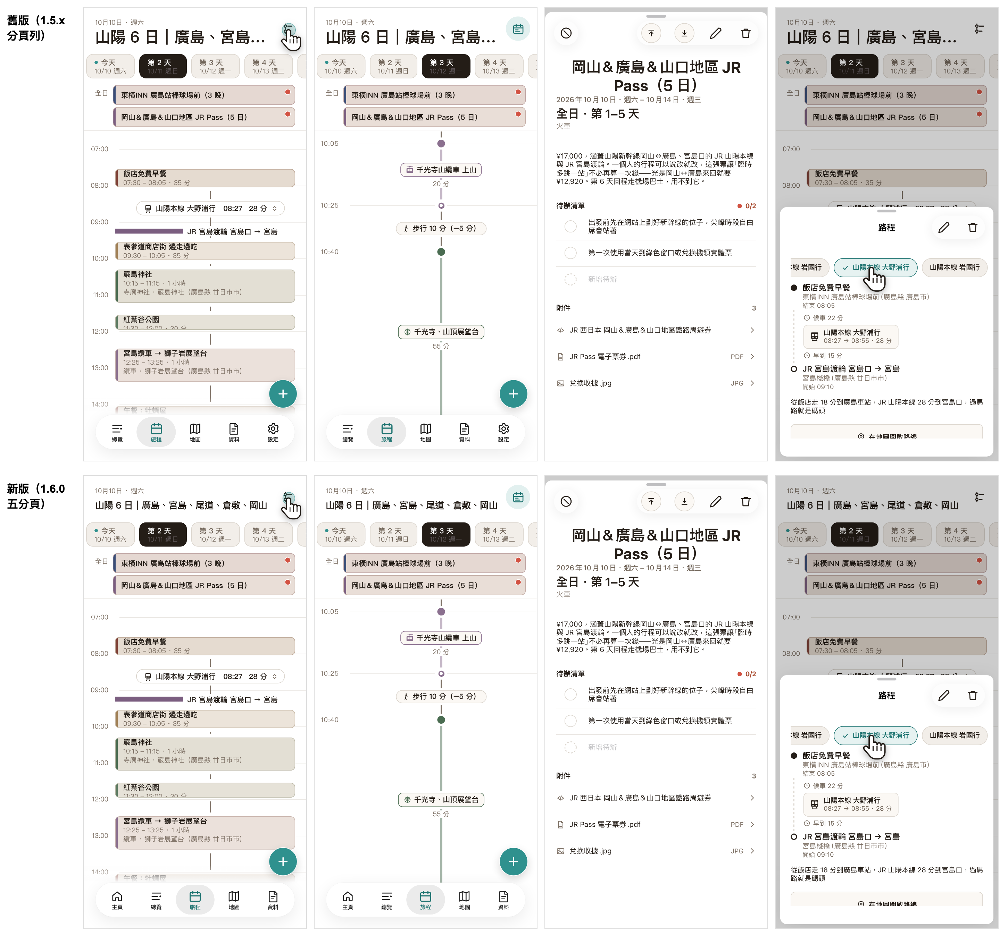
Premium、旅程中；封面＋行程（中）、待辦（小）、匯率（小）、總覽；沒有廣告。iPhone 6.9 吋 1320×2868、繁中。標題是佔位（「主頁：旅程一打開就看得到」、副標標了「（佔位）」）。
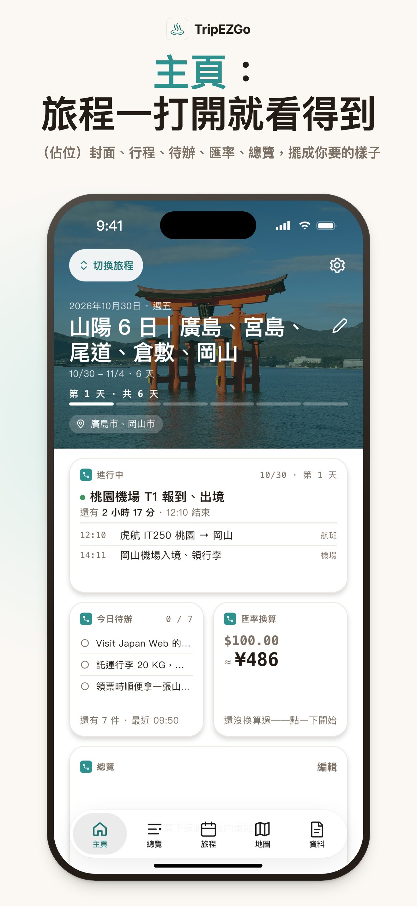
兩支手機並排（左：行程詳情 event.html?event=d1-airport&extra=1，右：路程 leg.html），1320×2868、繁中。標題、副標都是佔位。
複製 creative.html 到 drafts-160/creative-160.html（App repo 沒動）。兩個版本請選：A 只換延伸區右邊那支（總覽→主頁），主標不動；B 換安全區那支（行事曆→主頁），主標改成佔位句。
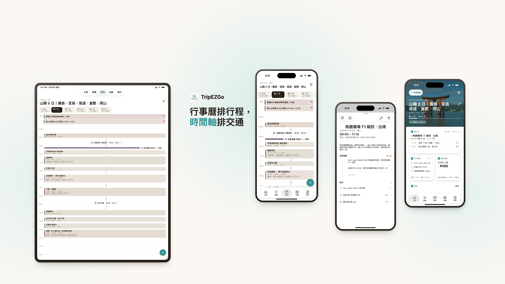
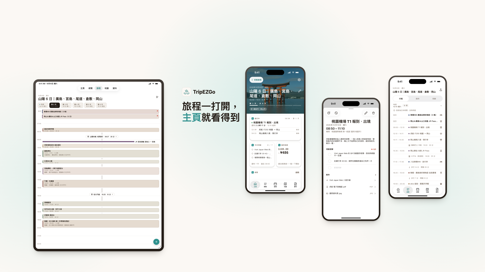